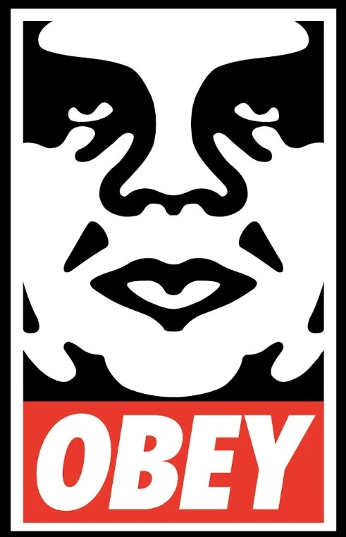

Frank Shepard Fairey (born February 15, 1970) is an American contemporary street artist, graphic designer, activist, illustrator, and founder of OBEY Clothing who emerged from the skateboarding scene.
Founded in 2001 by street artist and illustrator Shepard Fairey as an extension to his work in activism. Propaganda is used in most of his work, while most of his clothing has subliminal messages. Not all of his work is on his clothing but many murals and personal paintings are done globally. Street Art is the type of art he designs while his clothing is considered as Street Wear.
LOGO (BOTTOM)
